SPSS 27 – 快速回顾
作者：Ruben Geert van den Berg，发布于 SPSS Blog
2020年6月19日，SPSS 27版本发布。虽然它有一些有用的新功能，但其中大多数的实现都很糟糕。本回顾将快速带您了解主要的改进及其局限性。
- Cohen’s D - T检验的效应量
- SPSS 27 - 功效与样本量计算
- APA 格式的频数表
- Python 2.x 版本已弃用
- SPSS 的搜索功能
- 引导程序（Bootstrapping）包含在 SPSS 基础版中
Cohen’s D - T检验的效应量
Cohen’s D 是所有3种 T 检验的主要效应量指标：
长期以来，SPSS 用户一直抱怨 SPSS 中缺少 Cohen’s D。 但是，SPSS 27 最终包含了它，如下所示。
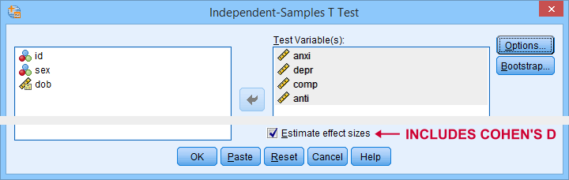
获得 Cohen’s D 的唯一方法是选择“Estimate effect sizes（估计效应量）”。 遗憾的是，这会产生一个单独的表格，其中包含比我们通常想要的_多得多_的输出。
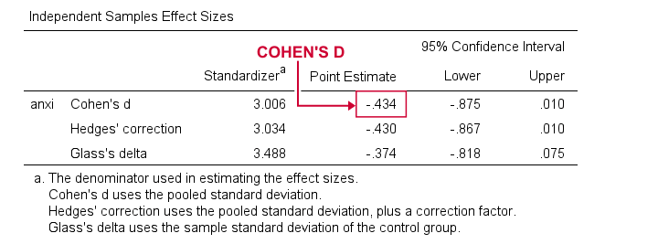
那么，为什么这很糟糕呢？
- APA 报告指南要求使用单个表格，其中包含显著性检验和 Cohen’s D。 要符合此标准，需要手动从单独的 SPSS 表中复制粘贴结果——这绝不是一个好主意。
- 过多的输出会混淆用户。 我敢打赌，很多人会经常将“Standardizer（标准化估计）”而不是“Point estimate（点估计）”报告为 Cohen’s D。
那么，正确的方法是什么？
正确的方法可以在 JASP 中找到。 下图显示了它如何实现 Cohen’s D。
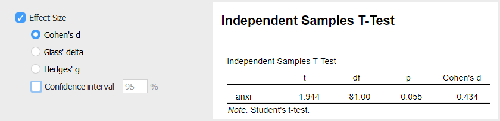
那么，是什么让它比 SPSS 的实现更好呢？ 好，
- JASP 允许我们选择它报告哪个效应量指标；
- 我们可以选择它报告哪个置信区间 ——可以选择不报告；
- JASP 在单个表格中报告所有结果；
- Cohen’s D 被称为“Cohen’s d”而不是“Point estimate（点估计）”。
功效与样本量计算 - 基础知识
在我们转向 SPSS 27 中的功效计算之前，让我们首先回顾一些最基本的基础知识。
计算功效或所需的样本量涉及 4 个统计量：
- α - 通常为 0.05 - 是犯第 I 类错误的概率：如果某个零假设实际上为真，则拒绝该假设；
- (1 - β) 或 power（功效） - 通常为 0.80 - 是在给定某个精确的备择假设（通常表示为效应量）的情况下，拒绝某个零假设的概率；
- effect size（效应量） 是一个标准化的数字，用于概括某个零假设在多大程度上_不_为真——无论是在样本中还是在总体中；
- sample size（样本量） 是某个显著性检验中涉及的独立观测值的数量。
如果我们知道其他 3 个统计量，我们可以计算这 4 个统计量中的每一个。 实际上，我们通常_不_知道这些，但我们仍然可以做出有根据的猜测。 这些会导致可以轻松计算的不同情景。 这主要用于
- 计算在给定的 α 和 (1 - β) 下，不同效应量所需的required sample sizes（样本量）；
- 计算在给定的 α 和 (1 - β) 下，不同样本量的 power（功效）。
假设我们要比较 3 种不同的药物。 我们计划在 α = 0.05 时进行 3 组 ANOVA（方差分析），并且我们希望 (1 - β) = 0.80。 我们猜测效应量 Cohen’s f = 0.25（中等）。
在这种情况下，我们应该使用总样本量 N = 157 名参与者，如下所示。
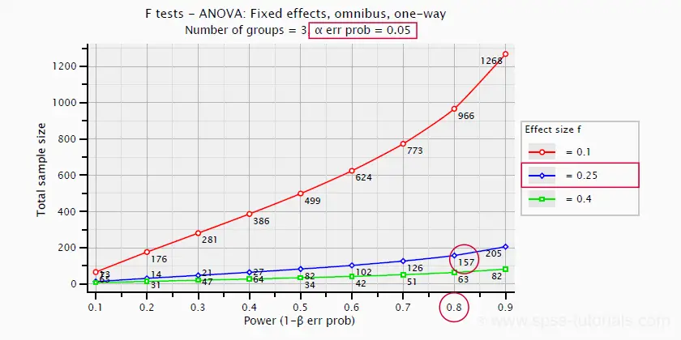
SPSS 27 - 功效与样本量计算
现在假设我们想知道 4 向 ANOVA 所需的样本量。 我们首先打开功效分析对话框，如下所示。
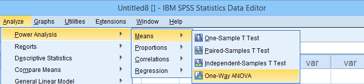
在打开的对话框中（如下所示），
 我们将选择“Estimate sample size（估计样本量）”
我们将选择“Estimate sample size（估计样本量）”  我们将输入我们期望的 power（功效）或 (1 - β)；
我们将输入我们期望的 power（功效）或 (1 - β)；  我们将输入我们计划测试的 alpha level（显著性水平）或 α。
我们将输入我们计划测试的 alpha level（显著性水平）或 α。
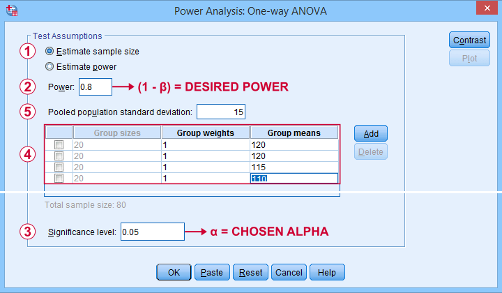
我们的样本量计算只需要再一个数字：预期的效应量。 但是由于某些_非常_愚蠢的原因，我们无法在此对话框中输入任何效应量。 相反，如果我们输入以下内容，SPSS 将为我们计算它
 所有预期均值 和
所有预期均值 和  预期的 Pooled population standard deviation（合并总体标准差）。
预期的 Pooled population standard deviation（合并总体标准差）。
问题是您可能不知道在此处输入什么：由于我们在收集任何数据_之前_运行此分析，因此我们无法查找所需的统计信息。
那么，效应量如何使情况变得更好呢？ 好吧，首先，效应量是一个数字，而不是对话框所需的单独数字。 并且由于它是一个数字，我们可以查阅简单的经验法则，例如
- f = 0.10 表示小效应；
- f = 0.25 表示中等效应；
- f = 0.40 表示大效应。
此类估计的效应量可以直接输入到 G*Power 中，如下所示。 它不需要 4 个（未知的）均值和一个（未知的）标准差。 但是，您可以选择从这些数字计算效应量，然后继续。
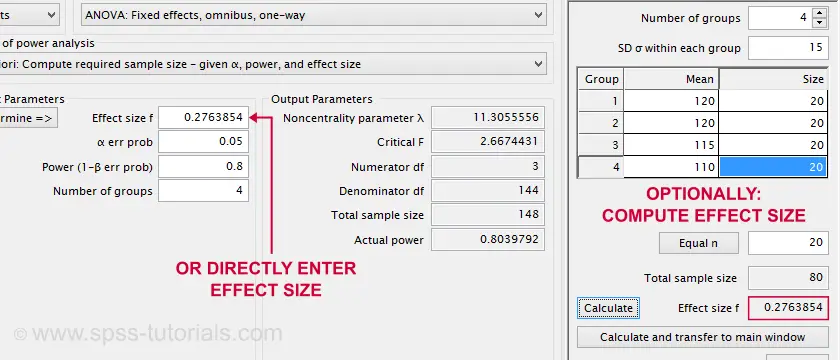
请注意，GPower 对话框还包含主要输出：我们应该收集总样本量 N = 148 个独立观测值的数据。
接下来，我们在 SPSS 27 中重新运行了此分析。 输出如下所示。
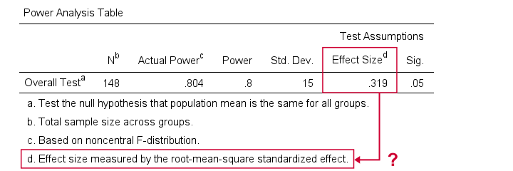 来自 SPSS 27 的样本量计算输出示例
幸运的是，SPSS 和 GPower 的结论几乎相同。 但是由于某些奇怪的原因，SPSS 将“root-mean-square standardized effect（均方根标准化效应）”报告为其效应量指标。
ANOVA 的常用效应量指标为
- η 2 或（偏）eta 平方；
- ω 2 或 omega 平方；
- Cohen’s f。
上述输出不包含这些。 反之，（偏）eta 平方是如果我们实际上在 SPSS 中_运行_ ANOVA 时获得的唯一效应量指标。
我们现在可以研究 SPSS 功效分析中的图。 或者我们可以讨论为什么完全没有卡方检验。 但让我们不要浪费时间。 SPSS 功效分析很可悲。 请改用 GPower。
APA 格式的频数表
基本频数分布是所有统计中最基本的表格。 遗憾的是，SPSS 中的那些表格会让用户感到困惑，并且不符合 APA 指南。 这就是为什么我们在几年前发布了在 SPSS 中创建 APA 风格的频数表。
SPSS 27 最终提供了类似的表格。 要创建它们，请导航到 A nalyze  D e scriptive statistics F requencies 并按照以下步骤操作。
D e scriptive statistics F requencies 并按照以下步骤操作。
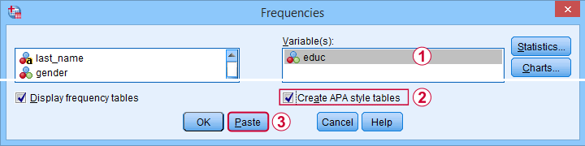
这些步骤会生成以下语法。
***SPSS 27 粘贴的 APA 频数表语法。
**
FREQUENCIES VARIABLES=educ jtype
/ORDER=ANALYSIS.
OUTPUT MODIFY
/REPORT PRINTREPORT=NO
/SELECT TABLES
/IF COMMANDS=["Frequencies(LAST)"] SUBTYPES="Frequencies"
/TABLECELLS SELECT=[VALIDPERCENT] APPLYTO=COLUMN HIDE=YES
/TABLECELLS SELECT=[CUMULATIVEPERCENT] APPLYTO=COLUMN HIDE=YES
/TABLECELLS SELECT=[TOTAL] SELECTCONDITION=PARENT(VALID) APPLYTO=ROW HIDE=YES
/TABLECELLS SELECT=[TOTAL] SELECTCONDITION=PARENT(MISSING) APPLYTO=ROW HIDE=YES
/TABLECELLS SELECT=[VALID] APPLYTO=ROWHEADER UNGROUP=YES
/TABLECELLS SELECT=[PERCENT] SELECTDIMENSION=COLUMNS FORMAT="PCT"
APPLYTO=COLUMN
/TABLECELLS SELECT=[COUNT] APPLYTO=COLUMNHEADER REPLACE="N"
/TABLECELLS SELECT=[PERCENT] APPLYTO=COLUMNHEADER REPLACE="%".标准 FREQUENCIES 命令创建表格，然后 OUTPUT MODIFY 调整它们。 这可能有效，但它需要 14 行语法。 我们的方法——结合 COMPUTE 和 MEANS——只需要 3 行，如下所示。
***SPSS 教程中的 APA 频数表语法。
**
compute constant = 0.
means constant by educ jtype
/cells count npct.
***（可选）设置更好的列标题。
**
output modify
/select tables
/if commands = ["means(last)"]
/tablecells select = [percent] applyto = columnheader replace = '%'.那么，如果我们真的只需要 3 行，为什么 SPSS 27 需要 14 行语法？ 当然，它必须创建更好的输出，对吗？ 好吧… 没有。 让我们仔细比较两种方法的结果。
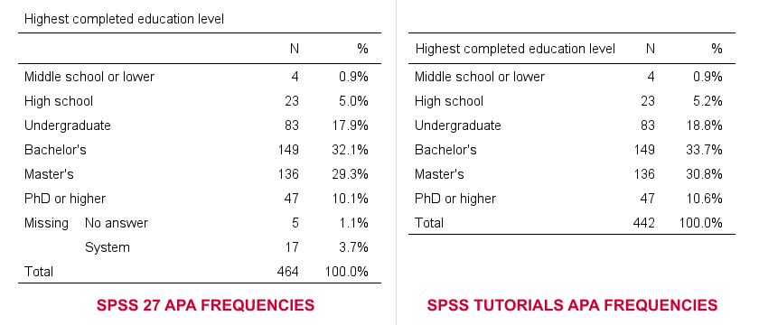
- SPSS 27 方法始终包含 user missing values（用户缺失值）——无论您是否需要它。 排除它们的唯一方法是使用某种类型的 FILTER。 请注意，您可能需要为不同的表格使用不同的过滤器——确实非常乏味。
- 默认情况下，我们的方法排除用户缺失值。 但是，您可以通过将 /MISSING INCLUDE 添加到 MEANS 命令来选择包含它们。 如果您一次运行多个表格，这也可以正常工作。
- SPSS 27 始终包含 system missing values（系统缺失值）。
- 我们的方法从不包含系统缺失值。 但是，如果您将它们 RECODE 为用户缺失值，则可以包含它们，可能在 TEMPORARY 之前。
简而言之，我们认为 SPSS 27 方法在所有方面都比我们在几年前在在 SPSS 中创建 APA 风格的频数表 中提出的方法更糟糕。
Python 2.x 版本已弃用
默认情况下，SPSS 27 不再支持 Python 2.x。 这是有道理的，因为 Python 开发人员本身在 2020 年 4 月左右弃用了 2 版本。
对我们来说，这是个坏消息，因为我们仍然在 Python 2 中使用大量的脚本和工具。我们很清楚我们应该在 Python 3 中重写这些脚本和工具，但我们现在没有时间这样做。 幸运的是，您仍然可以在 SPSS 27 中使用 Python 2。 首先，只需在您的系统上安装 Python 2.7。 接下来，导航到 E dit Optio n s 并选择 File Locations 选项卡。 最后，按照以下步骤操作。
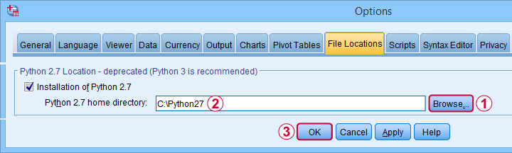
完成这些步骤后，您可以在 SPSS 27 中使用 Python 2。 但是，一个问题是，每次您在 Python 2 中运行任何内容时，SPSS 都会抛出 >Warning # 8501 Command name: begin program。 如果您运行大量的 Python 2 代码块，这将变得非常烦人。
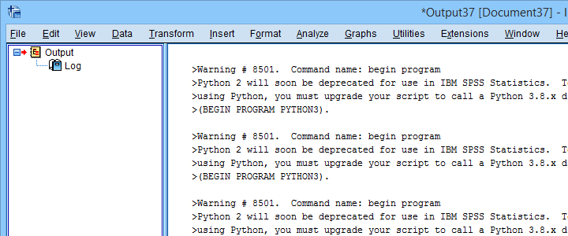
您可以在运行任何 Python 代码块之前运行 SET ERRORS NONE 来阻止这些警告。 在您完成这些代码块后，请确保通过运行 SET ERRORS LISTING 重新打开错误。 但是，这是一个非常糟糕的解决方案。 我们试图仅阻止上述警告 # 8501，但我们没有找到任何方法来实现它。
最后但并非最不重要的一点是，弃用 Python 2 而支持 Python 3 可能会导致兼容性问题：SPSS 13-23 版本_只能_与 Python 2 一起使用，而不能与 Python 3 一起使用。 因此，对于这些 SPSS 版本，我们必须在 Python 2 中构建我们的工具。 遗憾的是，这些工具将不再与 SPSS 27“开箱即用”。
SPSS 的搜索功能
SPSS 27 附带了一个搜索功能，据称可以找到“帮助主题、对话框和案例研究”。 我们的第一次尝试是搜索“kruskal”以查找有关 Kruskal-Wallis 检验的信息。 尽管 SPSS 显然包含此检验，但搜索对话框显示零结果。
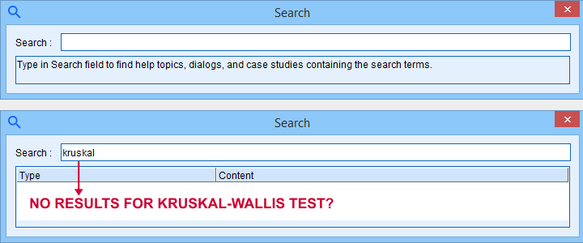
我们没有进一步探索搜索功能。
引导程序（Bootstrapping）包含在 SPSS 基础版中
非常简单地说，引导程序（Bootstrapping）估计标准误差和抽样分布。 它通过从样本中重新采样观测值来模拟简单的随机抽样过程来实现这一点。 像这样，它不依赖于通常的统计假设，例如正态分布变量。
传统上，您可以通过以下方式在 SPSS 中引导统计信息：
- 宏（这是 PROCESS 对话框引导其结果的方式）；
- SPSS Python 脚本或；
- 引导程序选项：一个需要额外许可证的 SPSS 附加模块。
SPSS 27 不再需要上述额外许可证：它默认包含引导程序选项。 对于从以前版本升级的 SPSS 用户来说，这是一个不错的额外奖励。
结论
关于 SPSS 27 的好消息是，它实现了一些用户实际需要的有用的新功能。 本回顾中介绍的一些示例包括
- T 检验的 Cohen’s D；
- APA 格式的频数表；以及
- 功效和样本量计算。
然而，坏消息是，这些功能的实现很糟糕。 它们看起来和感觉起来好像是由统计学家和程序员单独开发的，而没有咨询任何
- SPSS 用户；
- 用户体验（UX）专业人士；
- 竞争软件 - 最值得注意的是 JASP 和 GPower。
最终结果看起来像是对重新发明轮子的糟糕尝试。
这就是_我们_的想法。 那么您呢？ 您是否尝试过 SPSS 27，您对它有什么看法？